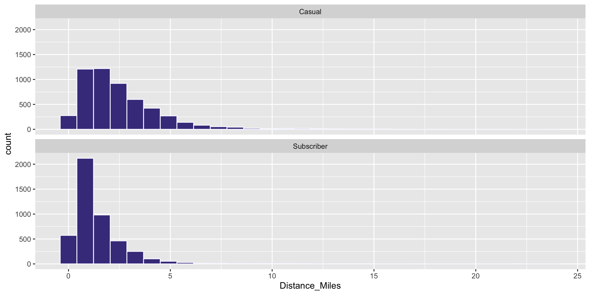

Summary Statistics
Grayson White
Math 141
Week 2 | Fall 2025
Announcements
- The teaching team would love to see you in Office hours!
- Instructor office hours: For individual or small group help on problems or concepts
- Course assistant office hours: To work on assignments with your peers and get help from the course assistants when you are stuck
Goals for Today
- Consider measures for summarizing quantitative data
- Center
- Spread/variability
- Consider measures for summarizing categorical data
Load Necessary Packages

dplyr is part of the tidyverse collection of data science packages.
Import the Data
Rows: 9,999
Columns: 19
$ RouteID <dbl> 4074085, 3719219, 3789757, 3576798, 3459987, 3947695,…
$ PaymentPlan <chr> "Subscriber", "Casual", "Casual", "Subscriber", "Casu…
$ StartHub <chr> "SE Elliott at Division", "SW Yamhill at Director Par…
$ StartLatitude <dbl> 45.50513, 45.51898, 45.52990, 45.52389, 45.53028, 45.…
$ StartLongitude <dbl> -122.6534, -122.6813, -122.6628, -122.6722, -122.6547…
$ StartDate <chr> "8/17/2017", "7/22/2017", "7/27/2017", "7/12/2017", "…
$ StartTime <time> 10:44:00, 14:49:00, 14:13:00, 13:23:00, 19:30:00, 10…
$ EndHub <chr> "Blues Fest - SW Waterfront at Clay - Disabled", "SW …
$ EndLatitude <dbl> 45.51287, 45.52142, 45.55902, 45.53409, 45.52990, 45.…
$ EndLongitude <dbl> -122.6749, -122.6726, -122.6355, -122.6949, -122.6628…
$ EndDate <chr> "8/17/2017", "7/22/2017", "7/27/2017", "7/12/2017", "…
$ EndTime <time> 10:56:00, 15:00:00, 14:42:00, 13:38:00, 20:30:00, 10…
$ TripType <lgl> NA, NA, NA, NA, NA, NA, NA, NA, NA, NA, NA, NA, NA, N…
$ BikeID <dbl> 6163, 6843, 6409, 7375, 6354, 6088, 6089, 5988, 6857,…
$ BikeName <chr> "0488 BIKETOWN", "0759 BIKETOWN", "0614 BIKETOWN", "0…
$ Distance_Miles <dbl> 1.91, 0.72, 3.42, 1.81, 4.51, 5.54, 1.59, 1.03, 0.70,…
$ Duration <dbl> 11.500, 11.383, 28.317, 14.917, 60.517, 53.783, 23.86…
$ RentalAccessPath <chr> "keypad", "keypad", "keypad", "keypad", "keypad", "ke…
$ MultipleRental <lgl> FALSE, FALSE, FALSE, FALSE, TRUE, FALSE, FALSE, FALSE…Summarizing Data
| RouteID | PaymentPlan | StartHub | Distance_Miles |
|---|---|---|---|
| 3596434 | Subscriber | NW 18th at Flanders | 0.59 |
| 3607170 | Subscriber | NW Raleigh at 21st | 0.71 |
| 3631639 | Casual | SW 2nd at Pine | 3.15 |
| 3912181 | Casual | SE Water at Taylor | 5.89 |
| 4031739 | Casual | SE Clay at Water | 1.34 |
| 3859969 | Casual | SW Naito at Morrison | 1.56 |
| 4315016 | Casual | NW Everett at 22nd | 3.50 |
| 4252609 | Casual | NW Flanders at 14th | 1.81 |
| 3809564 | Casual | NA | 2.74 |
- Hard to do by eyeballing a spreadsheet with many rows!
Summarizing Data Visually

For a quantitative variable, want to answer:
What is an average value?
What is the trend/shape of the variable?
How much variation is there from case to case?
Need to learn key summary statistics: Numerical values computed based on the observed cases.
Measures of Center
Mean: Average of all the observations
- \(n\) = Number of cases (sample size)
- \(x_i\) = value of the i-th observation
- Denote by \(\bar{x}\)
Measures of Center
Mean: Average of all the observations
- \(n\) = Number of cases (sample size)
- \(x_i\) = value of the i-th observation
- Denote by \(\bar{x}\)
\[ \bar{x} = \frac{1}{n} \sum_{i = 1}^n x_i \]
Measures of Center
Mean: Average of all the observations
- \(n\) = Number of cases (sample size)
- \(x_i\) = value of the i-th observation
- Denote by \(\bar{x}\)
\[ \bar{x} = \frac{1}{n} \sum_{i = 1}^n x_i \]
Measures of Center
Median: Middle value
- Half of the data falls below the median
- Denote by \(m\)
- If \(n\) is even, then it is the average of the middle two values
Measures of Center
Median: Middle value
- Half of the data falls below the median
- Denote by \(m\)
- If \(n\) is even, then it is the average of the middle two values
Measures of Center
Computing Measures of Center by Groups
Question: Who travels further, on average? Casual biketown users or payment plan subscribers?

Computing Measures of Center by Groups
Handy dplyr function: group_by()
# A tibble: 9,999 × 19
# Groups: PaymentPlan [2]
RouteID PaymentPlan StartHub StartLatitude StartLongitude StartDate StartTime
<dbl> <chr> <chr> <dbl> <dbl> <chr> <time>
1 4074085 Subscriber SE Elli… 45.5 -123. 8/17/2017 10:44
2 3719219 Casual SW Yamh… 45.5 -123. 7/22/2017 14:49
3 3789757 Casual NE Holl… 45.5 -123. 7/27/2017 14:13
4 3576798 Subscriber NW Couc… 45.5 -123. 7/12/2017 13:23
5 3459987 Casual NE 11th… 45.5 -123. 7/3/2017 19:30
6 3947695 Casual SW Mood… 45.5 -123. 8/8/2017 10:01
7 3549550 Casual NW 2nd … 45.5 -123. 7/10/2017 14:13
8 4411957 Casual NW Nait… 45.5 -123. 9/10/2017 07:41
9 4098004 Casual NW Nait… 45.5 -123. 8/18/2017 23:35
10 4096862 Subscriber SW Mood… 45.5 -123. 8/18/2017 20:10
# ℹ 9,989 more rows
# ℹ 12 more variables: EndHub <chr>, EndLatitude <dbl>, EndLongitude <dbl>,
# EndDate <chr>, EndTime <time>, TripType <lgl>, BikeID <dbl>,
# BikeName <chr>, Distance_Miles <dbl>, Duration <dbl>,
# RentalAccessPath <chr>, MultipleRental <lgl>Computing Measures of Center by Groups
Compute summary statistics on the grouped data frame:

And now it is time to learn the pipe: %>%

Chaining dplyr Operations
Instead of:
- Why pipe?
- You can also use
|>, which is newer and often referred to as the “baseRpipe.”
Measures of Variability
- Want a statistic that captures how much observations deviate from the mean
- Find how much each observation deviates from the mean.
- Compute the average of the deviations.
Measures of Variability
- Want a statistic that captures how much observations deviate from the mean
- Find how much each observation deviates from the mean.
- Compute the average of the deviations.
\[ \frac{1}{n} \sum_{i = 1}^n (x_i - \bar{x}) \]
Measures of Variability
- Want a statistic that captures how much observations deviate from the mean
- Find how much each observation deviates from the mean.
- Compute the average of the deviations.
\[ \frac{1}{n} \sum_{i = 1}^n (x_i - \bar{x}) \]
Problem?
Measures of Variability
- Want a statistic that captures how much observations deviate from the mean
Here is my NEW proposal:
- Find how much each observation deviates from the mean.
- Compute the average of the squared deviations.
Measures of Variability
- Want a statistic that captures how much observations deviate from the mean
Measures of Variability
- Want a statistic that captures how much observations deviate from the mean
Here is my ACTUAL formula:
- Find how much each observation deviates from the mean.
- Compute the (nearly) average of the squared deviations.
- Called sample variance \(s^2\).
Measures of Variability
- Want a statistic that captures how much observations deviate from the mean
Here is my ACTUAL formula:
- Find how much each observation deviates from the mean.
- Compute the (nearly) average of the squared deviations.
- Called sample variance \(s^2\).
\[ s^2 = \frac{1}{n - 1} \sum_{i = 1}^n (x_i - \bar{x})^2 \]
Measures of Variability
- Want a statistic that captures how much observations deviate from the mean
Here is my ACTUAL formula:
- Find how much each observation deviates from the mean.
- Compute the (nearly) average of the squared deviations.
- Called sample variance \(s^2\).
\[ s^2 = \frac{1}{n - 1} \sum_{i = 1}^n (x_i - \bar{x})^2 \]
Measures of Variability
- Want a statistic that captures how much observations deviate from the mean
- Find how much each observation deviates from the mean.
- Compute the (nearly) average of the squared deviations.
- Called sample variance \(s^2\).
- The square root of the sample variance is called the sample standard deviation \(s\).
Measures of Variability
- Want a statistic that captures how much observations deviate from the mean
- Find how much each observation deviates from the mean.
- Compute the (nearly) average of the squared deviations.
- Called sample variance \(s^2\).
- The square root of the sample variance is called the sample standard deviation \(s\).
\[ s = \sqrt{\frac{1}{n - 1} \sum_{i = 1}^n (x_i - \bar{x})^2} \]
Measures of Variability
- Want a statistic that captures how much observations deviate from the mean
- Find how much each observation deviates from the mean.
- Compute the (nearly) average of the squared deviations.
- Called sample variance \(s^2\).
- The square root of the sample variance is called the sample standard deviation \(s\).
\[ s = \sqrt{\frac{1}{n - 1} \sum_{i = 1}^n (x_i - \bar{x})^2} \]
Measures of Variability
- In addition to the sample standard deviation and the sample variance, there is the sample interquartile range (IQR):
Measures of Variability
- In addition to the sample standard deviation and the sample variance, there is the sample interquartile range (IQR):
\[ \mbox{IQR} = \mbox{Q}_3 - \mbox{Q}_1 \]
Measures of Variability
Comparing Measures of Variability
Which is more robust to outliers, the IQR or \(s\)?
Which is more commonly used, the IQR or \(s\)?
Summarizing Categorical Variables
Return to the Cambridge Dogs
Focus on the dogs with the 5 most common names
dogs <- read_csv("https://data.cambridgema.gov/api/views/sckh-3xyx/rows.csv")
# Useful wrangling that we will come back to
dogs_top5 <- dogs %>%
mutate(Breed = case_when(
Dog_Breed == "Mixed Breed" ~ "Mixed",
Dog_Breed != "Mixed Breed" ~ "Single")) %>%
filter(Dog_Name %in% c("Luna", "Charlie", "Lucy", "Cooper", "Rosie" ))
head(dogs_top5)# A tibble: 6 × 7
Dog_Name Dog_Breed Location_masked Latitude_masked Longitude_masked
<chr> <chr> <lgl> <dbl> <dbl>
1 Lucy Poodle NA 42.4 -71.1
2 Luna LABRADOODLE NA 42.4 -71.1
3 Charlie Border Terrier Mix NA 42.4 -71.1
4 Cooper German Shorthaired … NA 42.4 -71.1
5 Charlie Golden Retriever NA 42.4 -71.1
6 Luna Mixed Breed NA 42.4 -71.1
# ℹ 2 more variables: Neighborhood <chr>, Breed <chr>Frequency Table
Frequency Table
Another ggplot2 geom: geom_col()
If you have already aggregated the data, you will use geom_col() instead of geom_bar().
# A tibble: 5 × 2
Dog_Name n
<chr> <int>
1 Charlie 14
2 Cooper 8
3 Lucy 11
4 Luna 14
5 Rosie 10Another ggplot2 geom: geom_col()
And use fct_reorder() instead of fct_infreq() to reorder bars.
# A tibble: 5 × 2
Dog_Name n
<chr> <int>
1 Charlie 14
2 Cooper 8
3 Lucy 11
4 Luna 14
5 Rosie 10Contingency Table
Conditional Proportions
Conditional Proportions
# A tibble: 10 × 4
# Groups: Dog_Name [5]
Dog_Name Breed n prop
<chr> <chr> <int> <dbl>
1 Charlie Mixed 4 0.286
2 Charlie Single 10 0.714
3 Cooper Mixed 1 0.125
4 Cooper Single 7 0.875
5 Lucy Mixed 2 0.182
6 Lucy Single 9 0.818
7 Luna Mixed 7 0.5
8 Luna Single 7 0.5
9 Rosie Mixed 1 0.1
10 Rosie Single 9 0.9 - The dplyr function
mutate()adds new column(s) to your data frame.
Conditional Proportions
# A tibble: 10 × 4
# Groups: Dog_Name [5]
Dog_Name Breed n prop
<chr> <chr> <int> <dbl>
1 Charlie Mixed 4 0.286
2 Charlie Single 10 0.714
3 Cooper Mixed 1 0.125
4 Cooper Single 7 0.875
5 Lucy Mixed 2 0.182
6 Lucy Single 9 0.818
7 Luna Mixed 7 0.5
8 Luna Single 7 0.5
9 Rosie Mixed 1 0.1
10 Rosie Single 9 0.9 # A tibble: 10 × 4
# Groups: Breed [2]
Dog_Name Breed n prop
<chr> <chr> <int> <dbl>
1 Charlie Mixed 4 0.267
2 Charlie Single 10 0.238
3 Cooper Mixed 1 0.0667
4 Cooper Single 7 0.167
5 Lucy Mixed 2 0.133
6 Lucy Single 9 0.214
7 Luna Mixed 7 0.467
8 Luna Single 7 0.167
9 Rosie Mixed 1 0.0667
10 Rosie Single 9 0.214 How does the interpretation change based on which variable you condition on?
Reminders
The teaching team would love to see you in Office hours!
Next time:
- We’ll define data wrangling and
- Learn to use functions more in the
dplyrpackage to summarize and wrangle data